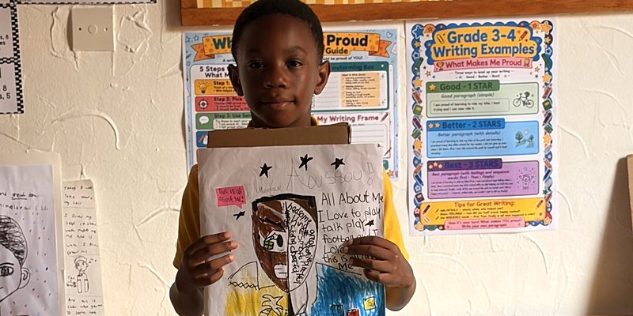
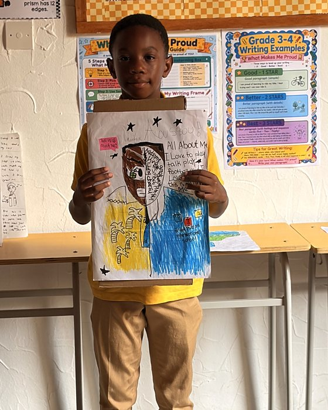
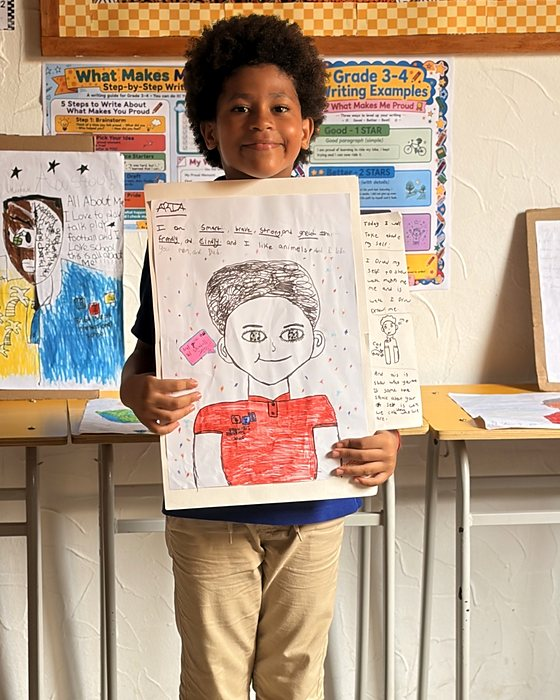
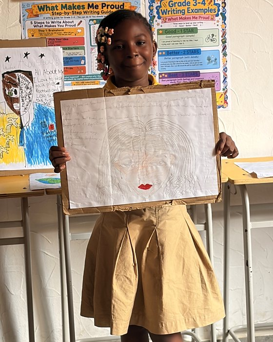
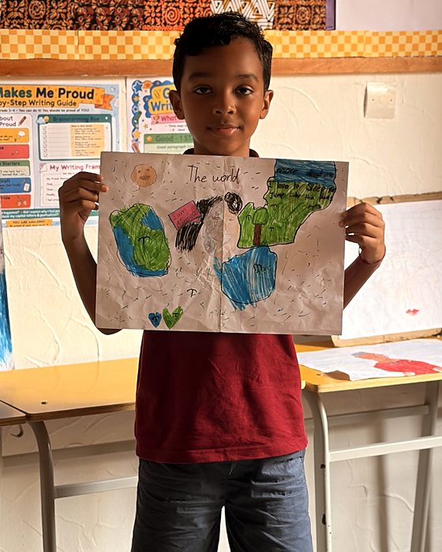
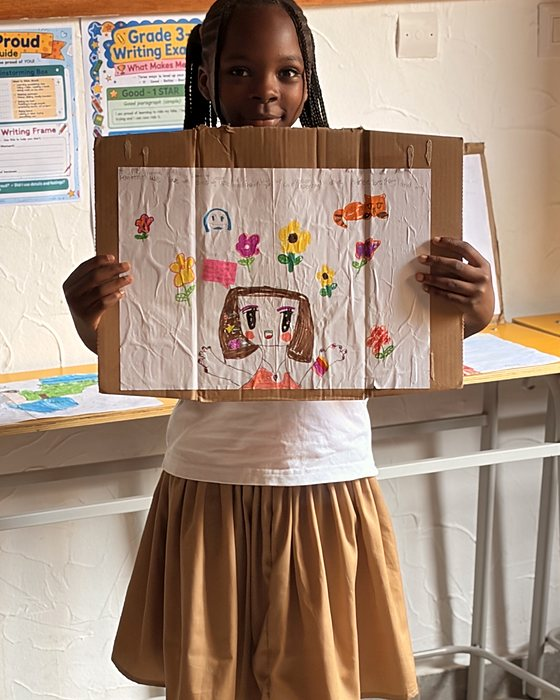
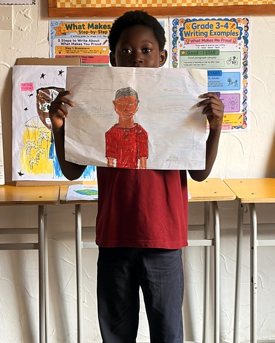

Who We Are: Grade 3 and 4 Celebrate Themselves
On Thursday, October 15, our Grade 3 and 4 students celebrated the end of their Who We Are unit of inquiry by sharing who they are with their classmates.
Each student created a self portrait and wrote about themselves, using the "What Makes Me Proud" writing guide to plan and improve their paragraphs. The posters are full of personality: favorite sports and animals, families and friends, and the words students chose to describe themselves, from smart and brave to kind and friendly.
Presenting their work helped our learners practice speaking with confidence, listening to one another, and appreciating what makes each person unique.

All about me 
Smart, brave, and strong 
A portrait in pencil 
My place in the world 
Flowers and favorite things 
Drawing myself
Well done, Grade 3 and 4. We are proud of you.